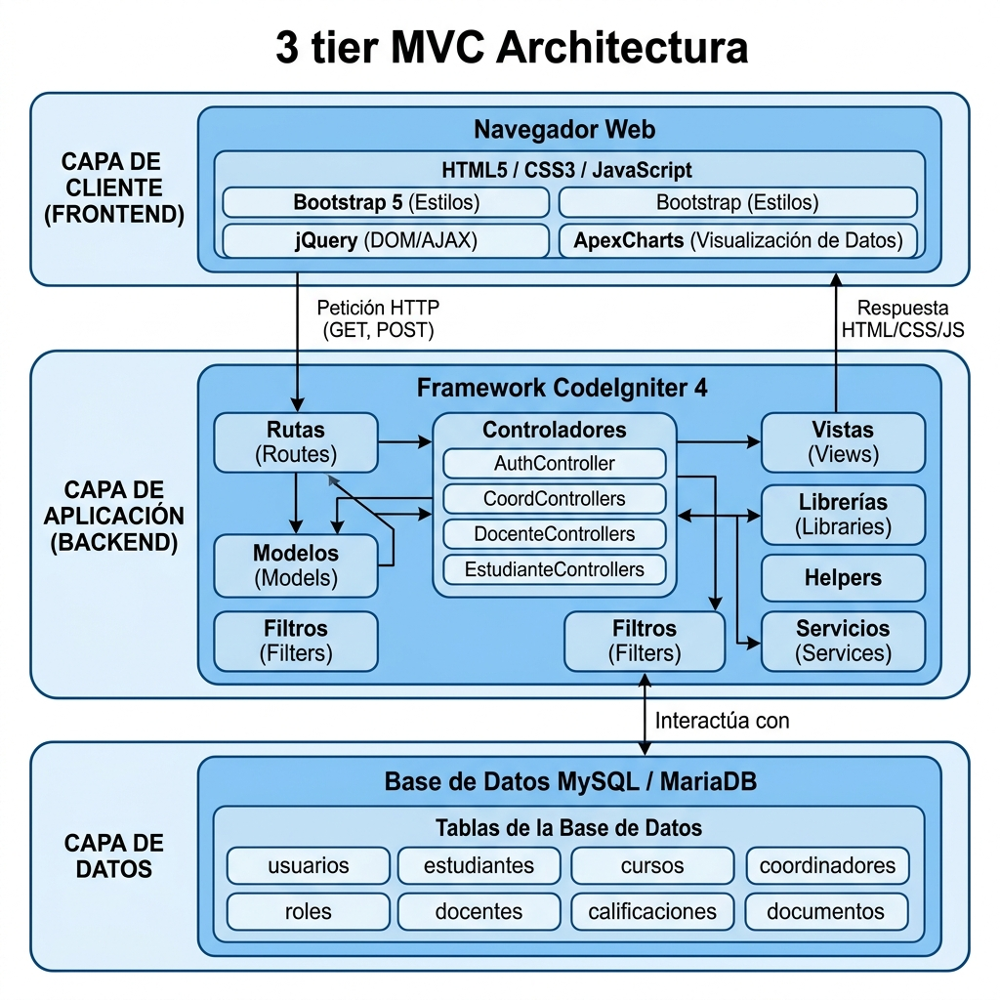
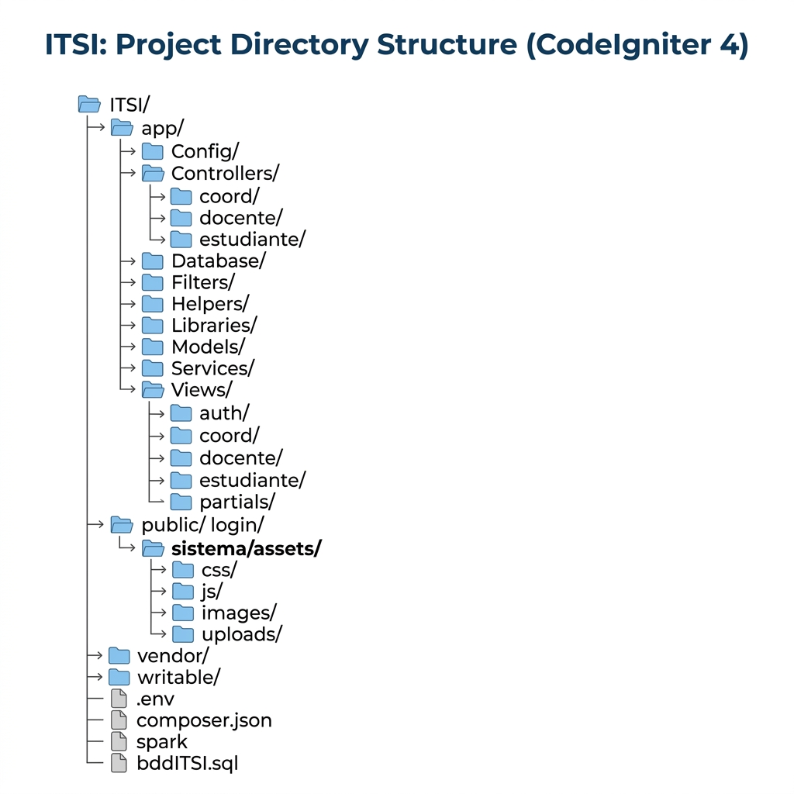

Tabla de Contenidos
1. Descripción General del Sistema
El Sistema de Vinculación ITSI es una aplicación web desarrollada para el Instituto Superior Tecnológico Ibarra, diseñada para gestionar integralmente los procesos de vinculación con la sociedad. El sistema automatiza y centraliza la administración de prácticas preprofesionales, servicio comunitario, convenios institucionales, educación continua y evaluaciones.
1.1 Objetivos del Sistema
- Centralizar la gestión de prácticas preprofesionales y servicio comunitario
- Automatizar el seguimiento de convenios institucionales
- Facilitar la gestión documental de procesos de vinculación
- Proporcionar reportes y estadísticas en tiempo real
- Gestionar evaluaciones de enlaces y prácticas
- Administrar actividades de educación continua
- Sistema de notificaciones para todos los actores del proceso
1.2 Roles del Sistema
| Rol | ID | Descripción |
|---|---|---|
| Coordinador | 1 | Administrador del departamento de vinculación. Acceso completo a todas las funcionalidades: gestión de prácticas, convenios, instructores, estudiantes, documentos, evaluaciones, reportes, backup del sistema y educación continua. |
| Docente | 2 | Tutor académico que supervisa prácticas de estudiantes. Gestiona actividades educativas, visualiza evaluaciones, realiza seguimiento de estudiantes asignados y genera reportes de tutoría. |
| Estudiante | 3 | Realiza prácticas preprofesionales y/o servicio comunitario. Registra actividades, sube documentos, consulta convenios, visualiza evaluaciones y gestiona su progreso académico. |

1.3 Módulos del Sistema
| Módulo | Descripción | Roles |
|---|---|---|
| Autenticación | Login, logout, recuperación de contraseña por email con tokens, cambio de contraseña obligatorio | Todos |
| Dashboard | Panel de control con estadísticas, gráficos (ApexCharts) y resumen de actividad | Todos |
| Prácticas | Gestión de prácticas preprofesionales y servicio comunitario: creación, asignación, seguimiento, asistencias, actividades | Todos |
| Convenios | Administración de convenios con instituciones: registro, vigencia, plazas, vencimientos, reportes | Coord / Est |
| Instructores | Gestión de instructores internos y externos, asignación a empleados, tipos de instructores | Coordinador |
| Documentos | Gestión documental con estados de revisión, tipos de documentos por práctica, formatos descargables | Coord / Est |
| Evaluaciones | Evaluaciones de prácticas, evaluaciones de enlaces, reportes de evaluaciones con gráficos | Todos |
| Educación Continua | Actividades educativas: cursos, talleres, calendario, participantes, inscripciones, reportes | Todos |
| Reportes | Generación de reportes en PDF (TCPDF), Excel (PhpSpreadsheet), CSV con filtros y estadísticas | Coord / Doc |
| Notificaciones | Sistema de notificaciones en tiempo real, marcado como leídas, filtrado por tipo | Doc / Est |
| Backup | Respaldo y restauración de base de datos, historial, descarga de backups | Coordinador |
| Perfil/Cuenta | Gestión de perfil personal, foto de perfil, cambio de contraseña | Todos |
2. Arquitectura del Sistema
El sistema implementa el patrón de diseño Modelo-Vista-Controlador (MVC) provisto por el framework CodeIgniter 4. La arquitectura se organiza en tres capas principales:

2.1 Capa de Presentación (Vistas)
Las vistas utilizan Bootstrap 5 como framework CSS, con archivos PHP que renderizan HTML dinámico. Se organizan por rol:
Views/auth/– Login y recuperación de contraseñaViews/coord/– Vistas del Coordinador (13 subdirectorios)Views/docente/– Vistas del Docente (9 subdirectorios)Views/estudiante/– Vistas del Estudiante (12 subdirectorios)Views/partials/– Componentes reutilizables (navbar, footer, notificaciones)
2.2 Capa de Lógica de Negocio (Controladores)
Los controladores se organizan por rol con namespaces dedicados:
| Grupo | Namespace | Controladores |
|---|---|---|
| General | App\Controllers | AuthController, BaseController, BasePdfController, EmpleadosController, NotificacionesController, ReportesController, SeguimientoPracticasController, UsuarioController |
| Coordinador | App\Controllers\coord | 17 controladores: Dashboard, Prácticas, Convenios, Instructores, Estudiantes, Documentos (PPR y PSC), Evaluaciones, Reportes, Backup, Perfil, Cuenta, Educación |
| Docente | App\Controllers\docente | 6 controladores: Dashboard, Prácticas, Educación, Evaluaciones, Perfil, Cuenta |
| Estudiante | App\Controllers\estudiante | 9 controladores: Dashboard, Prácticas, Documentos (PPR y PSC), Educación, Evaluaciones, Convenios, Perfil, Cuenta |
2.3 Capa de Datos (Modelos)
El sistema cuenta con 46 modelos que gestionan el acceso a la base de datos mediante el ORM de CodeIgniter 4. Los modelos principales incluyen:
- UsuariosModel – Autenticación, verificación, gestión de contraseñas
- PracticasPreprofesionalesModel / ServiciosComunitariosModel – Gestión de prácticas
- DocumentosPracticasModel / DocumentosServicioComunitarioModel – Gestión documental
- EvaluacionesPracticasModel / EvaluacionesEnlacesModel – Evaluaciones
- NotificacionesModel – Sistema de notificaciones
- InstitucionesConveniosModel / DetallesConveniosModel – Convenios
2.4 Componentes Adicionales
| Componente | Archivo | Función |
|---|---|---|
| Filtros | EstudianteAsistenciaObligatoriaFilter.php | Verifica asistencia obligatoria del estudiante antes de acceder a rutas |
| Librería | EmailNotificaciones.php | Envío de notificaciones por correo electrónico (SMTP) |
| Servicio | EstudianteAsistenciaService.php | Lógica de negocio para asistencias de estudiantes |
| Helpers | ExcelHelper.php | Generación de reportes en formato Excel |
| Helpers | PdfHelper.php | Generación de reportes en formato PDF |
| Helpers | NotificacionesHelper.php | Funciones auxiliares para notificaciones |
| Helpers | tiempo_helper.php | Funciones de formateo de fechas y periodos |
| Config | PdfConfig.php | Configuración de logos y estilos para PDFs (TCPDF) |
| Config | Auth.php | Configuración de imagen de fondo del login |
3. Tecnologías Utilizadas
3.1 Backend
| Tecnología | Versión | Uso |
|---|---|---|
| PHP | ≥ 8.1 | Lenguaje de programación del servidor |
| CodeIgniter 4 | 4.x | Framework MVC principal |
| MySQL / MariaDB | 5.7+ / 10.4+ | Sistema de gestión de base de datos relacional |
| Composer | 2.x | Gestor de dependencias PHP |
| TCPDF | 6.10+ | Generación de documentos PDF |
| PhpSpreadsheet | 5.0+ | Generación de archivos Excel/CSV |
3.2 Frontend
| Tecnología | Uso |
|---|---|
| HTML5 / CSS3 | Estructura y estilos de la interfaz |
| Bootstrap 5 | Framework CSS responsivo, componentes UI |
| JavaScript (ES6+) | Interactividad del lado del cliente |
| jQuery | Manipulación del DOM y peticiones AJAX |
| ApexCharts | Gráficos y visualización de datos en dashboards |
| Bootstrap Icons | Iconografía del sistema |
| SimpleBar | Barras de desplazamiento personalizadas |
3.3 Infraestructura
| Componente | Tecnología |
|---|---|
| Servidor Web | Apache (XAMPP) |
| Servidor de Base de Datos | MySQL / MariaDB (XAMPP) |
| Control de Versiones | Git |
| Entorno de Desarrollo | XAMPP (Windows) |
| Correo Electrónico | SMTP (Gmail / Outlook) |
4. Estructura del Proyecto

ITSI/
├── app/ # Código fuente de la aplicación
│ ├── Config/ # Archivos de configuración
│ │ ├── App.php # Configuración general de la aplicación
│ │ ├── Auth.php # Configuración de autenticación (fondo login)
│ │ ├── Database.php # Configuración de la base de datos
│ │ ├── Email.php # Configuración SMTP para correos
│ │ ├── Filters.php # Registro de filtros HTTP
│ │ ├── PdfConfig.php # Configuración de logos para PDFs
│ │ └── Routes.php # Definición de todas las rutas (309 líneas)
│ ├── Controllers/ # Controladores MVC
│ │ ├── coord/ # 17 controladores del Coordinador
│ │ ├── docente/ # 6 controladores del Docente
│ │ ├── estudiante/ # 9 controladores del Estudiante
│ │ ├── AuthController.php # Autenticación y recuperación de contraseña
│ │ ├── BaseController.php # Controlador base
│ │ └── BasePdfController.php # Controlador base para generación de PDFs
│ ├── Database/ # Migraciones y seeders
│ ├── Filters/ # Filtros HTTP personalizados
│ ├── Helpers/ # Funciones auxiliares (Excel, PDF, Notificaciones)
│ ├── Libraries/ # Librería de envío de emails
│ ├── Models/ # 46 modelos de acceso a datos
│ ├── Services/ # Servicios de lógica de negocio
│ └── Views/ # Vistas PHP (plantillas HTML)
│ ├── auth/ # Login y recuperación de contraseña
│ ├── coord/ # Vistas del coordinador
│ ├── docente/ # Vistas del docente
│ ├── estudiante/ # Vistas del estudiante
│ └── partials/ # Componentes compartidos (navbar, footer)
├── public/ # Archivos accesibles públicamente
│ ├── index.php # Punto de entrada de la aplicación
│ ├── login/ # Assets del módulo de login
│ │ └── assets/ # CSS, JS, imágenes del login
│ ├── sistema/ # Assets del sistema principal
│ │ └── assets/ # CSS, JS, imágenes, librerías frontend
│ └── uploads/ # Archivos subidos por usuarios
├── vendor/ # Dependencias de Composer (auto-generado)
├── writable/ # Logs, caché, sesiones (permisos de escritura)
├── .env # Variables de entorno
├── composer.json # Dependencias del proyecto
├── bddITSI.sql # Script SQL de la base de datos
└── spark # CLI de CodeIgniter 4
5. Configuración del Entorno de Desarrollo
5.1 Archivo .env
El archivo .env en la raíz del proyecto contiene las variables de entorno. Las configuraciones principales son:
# ENTORNO (development | production | testing)
CI_ENVIRONMENT = development
# URL BASE DE LA APLICACIÓN
app.baseURL = 'http://localhost/ITSI/public/'
# BASE DE DATOS (descomentar y configurar según el entorno)
# database.default.hostname = localhost
# database.default.database = itsi
# database.default.username = root
# database.default.password =
# database.default.DBDriver = MySQLi
# database.default.port = 3306
# CORREO SMTP (para recuperación de contraseña)
# email.protocol = smtp
# email.SMTPHost = smtp.gmail.com
# email.SMTPPort = 587
# email.SMTPCrypto = tls
# email.fromEmail = tu_cuenta@gmail.com
# email.fromName = Sistema de Vinculación
# email.SMTPUser = tu_cuenta@gmail.com
# email.SMTPPass = contraseña_de_aplicacion5.2 Configuración de Base de Datos
La configuración principal se encuentra en app/Config/Database.php:
public array $default = [
'hostname' => 'localhost',
'username' => 'root',
'password' => '',
'database' => 'itsi',
'DBDriver' => 'MySQLi',
'charset' => 'utf8mb4',
'DBCollat' => 'utf8mb4_general_ci',
'port' => 3306,
];5.3 Configuración de Correo Electrónico
Archivo app/Config/Email.php. El sistema usa SMTP para enviar correos de recuperación de contraseña y notificaciones:
| Parámetro | Valor por defecto | Descripción |
|---|---|---|
protocol | smtp | Protocolo de envío |
SMTPHost | smtp.gmail.com | Servidor SMTP |
SMTPPort | 587 | Puerto SMTP |
SMTPCrypto | tls | Cifrado de conexión |
SMTPUser | (vacío) | Correo del remitente |
SMTPPass | (vacío) | Contraseña de aplicación |
fromName | Sistema de Vinculación | Nombre del remitente |
6. Instalación del Sistema
6.1 Requisitos Previos
| Software | Versión Mínima | Propósito |
|---|---|---|
| XAMPP | 8.1+ | Apache + MySQL + PHP |
| PHP | 8.1+ | Lenguaje del backend |
| MySQL / MariaDB | 5.7+ / 10.4+ | Base de datos |
| Composer | 2.x | Gestor de dependencias PHP |
| Navegador Web | Chrome/Firefox/Edge actualizado | Acceso al sistema |
| Git (opcional) | 2.x | Control de versiones |
6.2 Extensiones PHP Requeridas
Verificar que estén habilitadas en php.ini:
extension=curl
extension=gd
extension=intl
extension=mbstring
extension=mysqli
extension=openssl
extension=zip6.3 Pasos de Instalación
Instalar XAMPP
Descargar desde apachefriends.org e instalar con Apache y MySQL seleccionados. Verificar que PHP sea versión 8.1 o superior.
Instalar Composer
Descargar desde getcomposer.org. Verificar con: composer --version
Clonar o copiar el proyecto
Colocar la carpeta del proyecto en C:\xampp\htdocs\ITSI
cd C:\xampp\htdocs
git clone [URL_REPOSITORIO] ITSIInstalar dependencias
cd C:\xampp\htdocs\ITSI
composer installEsto instalará CodeIgniter 4, TCPDF, PhpSpreadsheet y demás dependencias.
Configurar el archivo .env
Verificar que el archivo .env tenga la configuración correcta de entorno, URL base y base de datos.
Crear e importar la base de datos
Acceder a phpMyAdmin (http://localhost/phpmyadmin), crear la base de datos itsi con cotejamiento utf8mb4_general_ci, e importar bddITSI.sql.
Verificar permisos de escritura
Asegurar que la carpeta writable/ tenga permisos de escritura para logs, caché y sesiones.
Iniciar servicios y acceder
Iniciar Apache y MySQL desde el panel de XAMPP. Acceder al sistema en: http://localhost/ITSI/public/
7. Configuración de la Base de Datos
7.1 Información General
| Parámetro | Valor |
|---|---|
| Nombre de la BD | itsi |
| Motor | InnoDB |
| Charset | utf8mb4 |
| Collation | utf8mb4_general_ci |
| Total de tablas | 50 tablas |
| Script SQL | bddITSI.sql (raíz del proyecto) |

7.2 Tablas Principales
| Tabla | Descripción |
|---|---|
TAB_USUARIOS | Usuarios del sistema (credenciales, roles, estado) |
TAB_DATOS_PERSONAS | Datos personales de todas las personas |
TAB_ESTUDIANTES | Información específica de estudiantes |
TAB_EMPLEADOS | Empleados del instituto |
TAB_CARRERAS | Carreras académicas disponibles |
TAB_DEPARTAMENTOS | Departamentos institucionales |
TAB_PRACTICAS_PREPROFESIONALES | Registro de prácticas preprofesionales |
TAB_SERVICIO_COMUNITARIO | Registro de servicio comunitario |
TAB_INSTITUCIONES_CONVENIOS | Instituciones con convenio |
TAB_DETALLES_CONVENIOS | Detalles de los convenios (vigencia, plazas) |
TAB_INSTRUCTORES | Instructores de prácticas |
TAB_ASIGNACIONES_PRACTICAS | Asignación estudiante-práctica-instructor |
TAB_DOCUMENTOS_PRACTICAS_PREPROFESIONALES | Documentos de prácticas preprofesionales |
TAB_DOCUMENTOS_SERVICIO_COMUNITARIO | Documentos de servicio comunitario |
TAB_EVALUACIONES_PRACTICAS_PREPROFESIONALES | Evaluaciones de prácticas |
TAB_EVALUACIONES_ENLACES | Evaluaciones de enlaces institucionales |
TAB_ACTIVIDADES_EDUCACION | Actividades de educación continua |
TAB_NOTIFICACIONES | Notificaciones del sistema |
TAB_RECUPERACION_CONTRASENA | Tokens de recuperación de contraseña |
TAB_ROLES | Catálogo de roles del sistema |
TAB_PERIODOS_ACADEMICOS | Períodos académicos |
7.3 Tablas de Catálogos
| Tabla | Descripción |
|---|---|
TAB_TIPOS_PRACTICAS | Tipos de prácticas |
TAB_TIPOS_CONVENIOS | Tipos de convenios |
TAB_TIPOS_ESTADOS | Estados generales |
TAB_TIPOS_INSTITUCION | Tipos de instituciones |
TAB_TIPOS_INSTRUCTORES | Tipos de instructores |
TAB_TIPOS_MODALIDADES | Modalidades de prácticas |
TAB_TIPOS_ACTIVIDADES | Tipos de actividades educativas |
TAB_TIPOS_CONTRATO | Tipos de contrato |
TAB_TIPOS_ROLES | Tipos de roles |
TAB_TIPOS_DOCUMENTOS_PREPROFESIONALES | Tipos de documentos PPR |
TAB_TIPOS_DOCUMENTOS_SERVICIO_COMUNITARIO | Tipos de documentos PSC |
7.4 Importación de la Base de Datos
Abrir phpMyAdmin: http://localhost/phpmyadmin
Crear nueva base de datos: itsi con cotejamiento utf8mb4_general_ci
Seleccionar la base de datos itsi → pestaña Importar
Seleccionar el archivo bddITSI.sql de la raíz del proyecto y ejecutar
8. Procedimiento de Despliegue del Sistema
8.1 Despliegue en Entorno Local (Desarrollo)
- Iniciar XAMPP → Activar Apache y MySQL
- Verificar que el proyecto esté en
C:\xampp\htdocs\ITSI - Acceder a
http://localhost/ITSI/public/ - Verificar que
CI_ENVIRONMENT = developmenten.env
8.2 Despliegue en Producción
Configurar entorno de producción
# En .env
CI_ENVIRONMENT = production
app.baseURL = 'https://dominio.com/'Instalar dependencias sin desarrollo
composer install --no-dev --optimize-autoloaderConfigurar base de datos de producción
Actualizar credenciales en .env con los datos del servidor de producción.
Configurar SMTP de producción
Configurar las credenciales SMTP para envío de correos de recuperación de contraseña.
Verificar permisos
Asegurar permisos de escritura en writable/ y public/uploads/.
Configurar Apache (VirtualHost)
<VirtualHost *:80>
ServerName dominio.com
DocumentRoot "/ruta/al/proyecto/ITSI/public"
<Directory "/ruta/al/proyecto/ITSI/public">
AllowOverride All
Require all granted
</Directory>
</VirtualHost>- Establecer
CI_ENVIRONMENT = productionpara desactivar la barra de depuración - Usar HTTPS (configurar certificado SSL)
- Cambiar la contraseña del usuario root de MySQL
- Restringir acceso a phpMyAdmin
- Asegurar que
.envno sea accesible públicamente
Capturas del Sistema


9. Guía de Instalación y Despliegue
Esta sección funciona como documento independiente que permite a cualquier persona instalar y ejecutar el sistema correctamente.
9.1 Requisitos del Sistema
| Componente | Requisito Mínimo | Recomendado |
|---|---|---|
| Sistema Operativo | Windows 10 / Linux / macOS | Windows 10/11 64-bit |
| RAM | 4 GB | 8 GB |
| Espacio en Disco | 500 MB | 1 GB |
| Procesador | Dual Core 2 GHz | Quad Core |
| Navegador | Chrome 90+ / Firefox 90+ | Última versión |
9.2 Herramientas Necesarias
| # | Herramienta | Enlace de Descarga | Versión |
|---|---|---|---|
| 1 | XAMPP | apachefriends.org | 8.1+ (incluye PHP, Apache, MySQL) |
| 2 | Composer | getcomposer.org | 2.x |
| 3 | Git (opcional) | git-scm.com | 2.x |
| 4 | Editor de código | VS Code | Última versión |
9.3 Instalación Paso a Paso
Paso 1: Instalar XAMPP
- Descargar XAMPP con PHP 8.1+ desde apachefriends.org
- Ejecutar el instalador y seleccionar componentes: Apache, MySQL, PHP, phpMyAdmin
- Instalar en la ruta por defecto:
C:\xampp - Al finalizar, abrir el Panel de Control de XAMPP
- Verificar las extensiones PHP habilitadas en
C:\xampp\php\php.ini: curl, gd, intl, mbstring, mysqli, openssl, zip
Paso 2: Instalar Composer
- Descargar el instalador de Windows desde getcomposer.org/download
- Ejecutar el instalador, seleccionar la ruta de PHP:
C:\xampp\php\php.exe - Verificar la instalación abriendo una terminal:
composer --version
Paso 3: Obtener el Proyecto
# Opción A: Clonar con Git
cd C:\xampp\htdocs
git clone [URL_REPOSITORIO] ITSI
# Opción B: Copiar manualmente
# Descomprimir/copiar la carpeta del proyecto en C:\xampp\htdocs\ITSIPaso 4: Instalar Dependencias
cd C:\xampp\htdocs\ITSI
composer installvendor/.
Paso 5: Configurar el Archivo .env
Editar el archivo .env en la raíz del proyecto:
# 1. Establecer el entorno
CI_ENVIRONMENT = development
# 2. Configurar la URL base
app.baseURL = 'http://localhost/ITSI/public/'
# 3. Configurar correo SMTP (opcional, para recuperación de contraseña)
# email.protocol = smtp
# email.SMTPHost = smtp.gmail.com
# email.SMTPPort = 587
# email.SMTPCrypto = tls
# email.fromEmail = tu_correo@gmail.com
# email.fromName = Sistema de Vinculación
# email.SMTPUser = tu_correo@gmail.com
# email.SMTPPass = tu_contraseña_de_aplicacionPaso 6: Crear la Base de Datos
- Iniciar Apache y MySQL desde el Panel de XAMPP
- Abrir phpMyAdmin:
http://localhost/phpmyadmin - Clic en "Nueva" en el panel izquierdo
- Nombre de la base de datos:
itsi - Cotejamiento:
utf8mb4_general_ci - Clic en "Crear"
- Seleccionar la base de datos
itsi - Ir a la pestaña "Importar"
- Seleccionar archivo:
C:\xampp\htdocs\ITSI\bddITSI.sql - Clic en "Importar" (se crearán ~50 tablas)
Paso 7: Ejecución del Sistema
- Verificar que Apache y MySQL estén activos en XAMPP
- Abrir el navegador web
- Navegar a:
http://localhost/ITSI/public/ - Deberá ver la pantalla de inicio de sesión
9.4 Solución de Problemas Comunes
| Problema | Causa Posible | Solución |
|---|---|---|
| Página en blanco | Error PHP oculto | Verificar writable/logs/ para ver errores. Asegurar CI_ENVIRONMENT = development |
| Error 404 | mod_rewrite deshabilitado | Habilitar mod_rewrite en httpd.conf y verificar .htaccess |
| Error de conexión a BD | Credenciales incorrectas | Verificar Database.php y que MySQL esté activo |
| No envía correos | SMTP no configurado | Configurar credenciales SMTP en .env o Email.php |
| Error al subir archivos | Permisos de escritura | Verificar permisos en writable/ y public/uploads/ |
| Composer install falla | Extensiones PHP faltantes | Habilitar extensiones requeridas en php.ini |
| Puerto 80 ocupado | Otro servicio usa el puerto | Cambiar puerto Apache en XAMPP o detener el otro servicio |